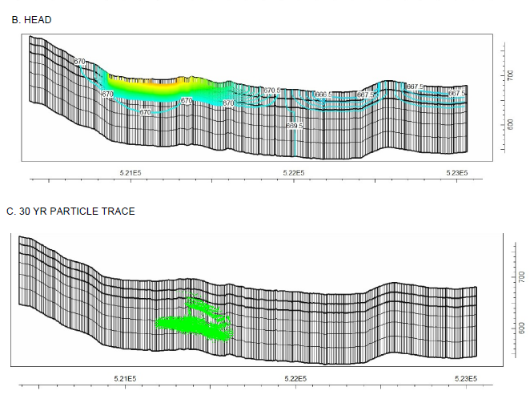
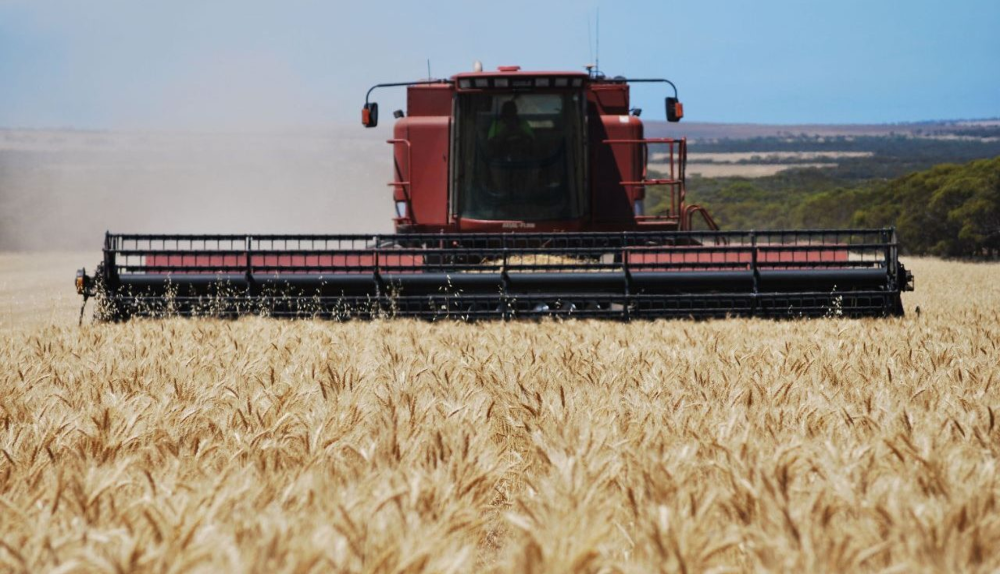
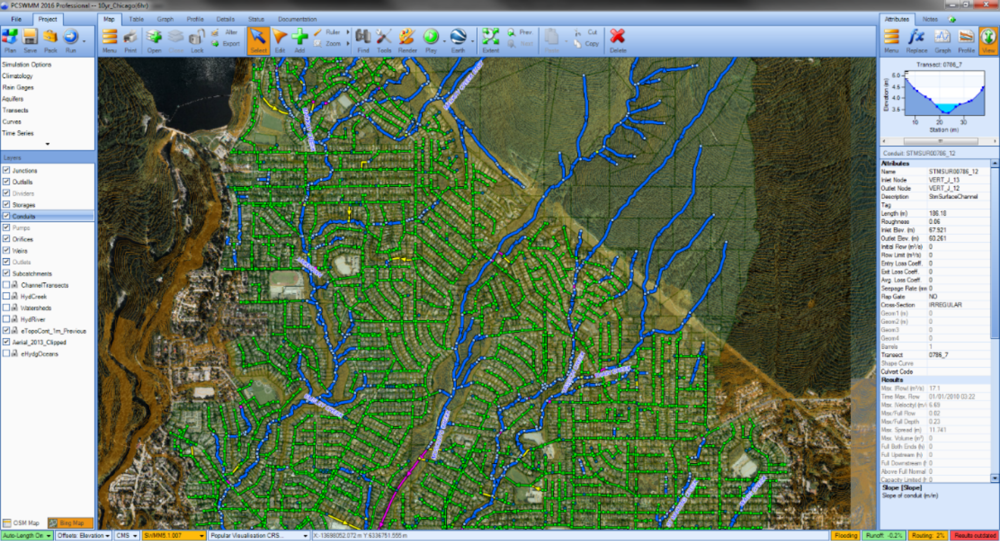
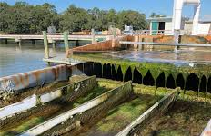

Proven results,
defensible science
Documented project experience across drinking water utilities, transportation infrastructure, international agriculture, and digital water policy.
Past performance
Documented experience across drinking water utilities, stormwater infrastructure, global agriculture, urban water risk, and digital water policy.

Groundwater Contaminant Fate and Transport Modeling for Water Supply Protection
Role: Lead Groundwater Modeler & Hydrogeologist · Award: $20,000
SUEZ Water NJ required a regulator-ready evaluation of long-term groundwater quality risks for Concord Well reinstatement. Our team built a 3D MODFLOW model spanning a 30-year horizon integrating aquifer properties, recharge estimates, and historical operational data.
Modeling confirmed plume stability and no migration toward the Concord Well under any pumping scenario — providing science-based evidence supporting regulatory acceptance and operational planning.

Nairobi Dam Breach Analysis and Watershed Risk Assessment
AMCOW and USAID required an independent assessment including watershed-scale hydrologic analysis, dam breach inundation mapping, and evaluation of downstream exposure to support donor reporting and regional policy dialogue.
Breach modeling demonstrated extensive downstream inundation risks. Findings supported a strategic shift toward basin-scale river restoration and climate-resilient urban water planning.

ESG Standards Benchmarking for the Australian Grains Industry
Award: $22,000
GRDC engaged our team to assess how global ESG standards — EU CSRD, SBTi FLAG, GRI 13, SBTN, AWS — reshape expectations for Australian grain growers and exporters, with focus on EU market access.
Delivered a phased adoption roadmap prioritising materiality assessment, MRV systems, supply chain traceability, and science-based target setting across the Australian grains sector.

Stormwater Modeling and Water Resources Engineering — Virginia DOT IDIQ
Clients: VDOT, City of Lynchburg, City of Virginia Beach · Award: $50,000
Multiple transportation and municipal infrastructure projects required stormwater modeling, drainage analysis, and technical memoranda compliant with Virginia stormwater regulations across multiple jurisdictions.
Deliverables supported permitting and construction for roadway improvements, pedestrian trails, intersection upgrades, and bridge hydraulics statewide.

Stormwater Modeling for Corporate Water Stewardship Program
A large-scale corporate sustainability program required stormwater modeling and designs demonstrating measurable, verifiable water quantity and quality benefits suitable for regulatory review and sustainability reporting.
Outputs demonstrated quantified runoff reduction, peak flow attenuation, and pollutant load reduction — supporting credible, science-based corporate water stewardship claims.
Data Center Water Transparency and Policy Analysis
Policymakers requested independent technical input during review of proposed legislation addressing data center water disclosure — translating hydrologic science and basin-scale risk into evidence-based perspectives.
Technical contributions addressed the Data Center Transparency Act and related state-level initiatives, emphasising consistent system boundaries, reporting frequency, and alignment with existing water monitoring frameworks.